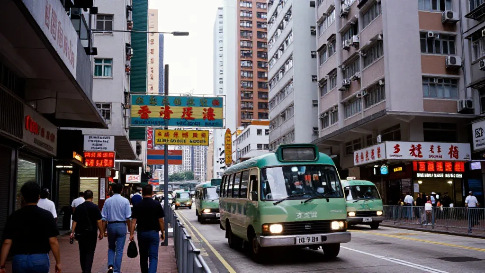
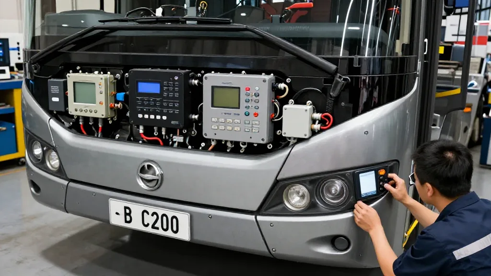
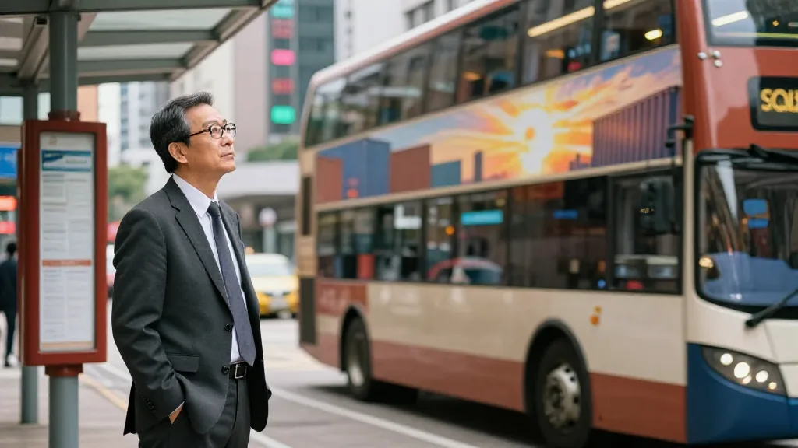

呢日我经过太子道，撞到一架城巴6333停喺巴士站，黄蓝色嘅车身喺多云嘅天底下特别醒目。巴士站有盖，几个人喺砖地行人路上等车，路面写住大大只白色「BUS」字，背景系一排住宅高楼同棕榈树。
我企喺度睇咗一阵，心里突然谂起好多嘢。

圖片由 AI輔助創作（Z-Image-Turbo）
一、太子道，唔系一条普通嘅路
太子道喺九龙，贯穿旺角、太子同九龙塘。呢条路我行咗二十几年，由1998年我开始做贸易嗰阵，每年都要嚟香港十几次，每次都喺太子道附近嘅酒店落脚。
嗰时嘅太子道仲未起地铁站，巴士就系最主要嘅交通工具。一架城巴由尖沙咀开到太子，再开去九龙塘，每一程都系香港人嘅日常。
而家睇返呢张相，最大嘅感受系——城巴仲喺度，但太子道已经唔同咗。路变阔咗，楼变高咗，但巴士站嘅砖地、有盖嘅候车亭、乘客等车嘅姿势，同二十年前几乎一模一样。
二、6333呢个编号，唔系普通嘅数字
城巴6333，呢个编号系架车嘅身份证。喺我哋做贸易嘅年代，每架巴士都有自己嘅编号，每架车嘅路线、车龄、维修记录，全部靠呢个编号追踪。同我哋做电子产品出口一样，每件货都要有SKU、有批号、有溯源。
一架巴士嘅一生，可能服务香港市民15到20年，每日来回行几百公里，载几万人。车号就系佢嘅履历表。睇到6333，我哋见到嘅唔系一架车，而系一个几十年嘅承诺。

圖片由 AI輔助創作（Z-Image-Turbo）
三、由城巴讲到制造业——我哋呢代人嘅集体记忆
城巴用嘅引擎、车壳、电子设备，好多嚟自欧洲品牌。香港巴士本身就系全球供应链嘅缩影：德国引擎、英国车架、日本电子、香港装配。
香港唔造巴士，但公共交通做到世界级，靠嘅就系呢种全球采购、本地服务嘅能力。呢种能力，就系我哋呢代人做贸易嘅核心技能。
1998年我做电子消费品出口，就系将中国制造经香港呢个超级联系人卖到全世界。香港嘅核心竞争力，从来唔系制造本身，而系连接嘅能力。城巴6333每日喺太子道来回，就系呢种连接能力嘅最具体写照。
圖片由 AI輔助創作（Z-Image-Turbo）
四、要睇城市嘅真实，唔好去景点，去巴士站
我成日话俾后生仔听：要睇城市真面目，唔好去尖沙咀、太平山、海洋公园，去巴士站。巴士站睇到人流、经济、文化同温度。太子道呢个巴士站，我企咗二十几年，每次都学到嘢。
五、2026年嘅太子道，仲有咩唔变？
睇返呢张相，最大感慨系好多嘢变咗，但城巴仲喺度。巴士、巴士站、等车嘅人、路面BUS字都仲喺度。但唔变嘅唔系物件，系连接嘅本质。
城巴嘅工作系将乘客由A点送去B点，贸易嘅工作系将货物由工厂送去客户手上，AI嘅工作系将答案由云端送去用户眼前。本质都一样：缩短距离、降低门槛、创造可能。

圖片由 AI輔助創作（Z-Image-Turbo）
六、畀70后实业家嘅三句话
第一句：认真做好一件简单嘅事，就系最大嘅不简单。城巴每日走同一条路，载同一种人，但佢系香港命脉。第二句：编号就系承诺。编号畀人睇，承诺畀自己守。第三句：连接就系价值。无论做巴士、贸易定AI，你嘅价值就系你连接咗边个同边个。
一架巴士嘅编号，可以系一个时代嘅印记。一个70后嘅记忆，可以跨越几个十年。一件简单嘅事，认真做，就系传奇。6333，多谢你今日畀我嘅呢一课。